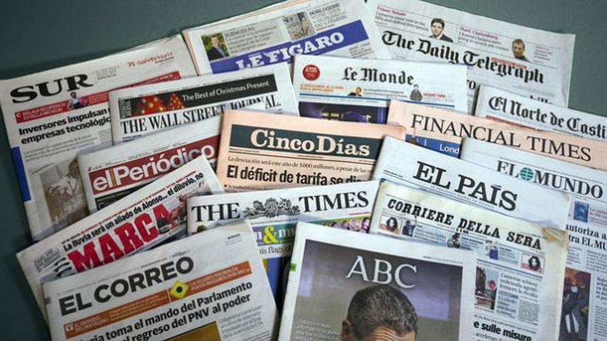

¿Qué es la prensa?

La prensa es un medio de comunicación social que difunde información, opiniones y noticias a través de periódicos, revistas y medios digitales. Es considerada el "cuarto poder" debido a su influencia en la sociedad y en la formación de la opinión pública.
Características de la prensa
- Difusión masiva y accesible para diferentes sectores sociales.
- Periodicidad: puede ser diaria, semanal o mensual.
- Objetividad: transmite hechos verificables, aunque puede incluir opiniones.
- Diversidad de temas: política, economía, cultura, deportes, sociedad, etc.
- Formato impreso y digital en la actualidad.
Tipos de prensa
La prensa se clasifica en varias categorías:
- Prensa escrita: Periódicos y revistas impresas.
- Prensa digital: Noticias en portales web y redes sociales.
- Prensa especializada: Dirigida a un público específico (científica, deportiva, cultural).
- Prensa amarillista: Se enfoca en el sensacionalismo y la exageración.
Historia de la prensa
La prensa tiene sus orígenes en el siglo XV con la invención de la imprenta de Gutenberg, que permitió la reproducción masiva de textos. El primer periódico reconocido apareció en Alemania en 1605. A lo largo de los siglos, la prensa evolucionó desde boletines informativos hasta convertirse en periódicos modernos y, más recientemente, en medios digitales globales.
Funciones de la prensa
- Informar: Comunicar hechos de relevancia social.
- Formar opinión: Orientar a la ciudadanía sobre temas importantes.
- Educar: Difundir conocimiento y cultura.
- Vigilar al poder: Actuar como contrapeso a gobiernos e instituciones.
- Entretener: A través de secciones de deportes, espectáculos, cultura, etc.
La importancia de la prensa
La prensa es fundamental para la democracia, ya que mantiene informada a la ciudadanía y fomenta la libertad de expresión. También funciona como un espacio para denunciar injusticias, promover la transparencia y facilitar la participación ciudadana.
Ventajas y desventajas de la prensa
Ventajas:
- Difunde información de manera rápida y masiva.
- Permite la formación de opinión pública.
- Es accesible en formato impreso y digital.
Desventajas:
- Puede caer en el sensacionalismo (prensa amarillista).
- No siempre garantiza objetividad.
- En ocasiones puede estar influenciada por intereses políticos o económicos.